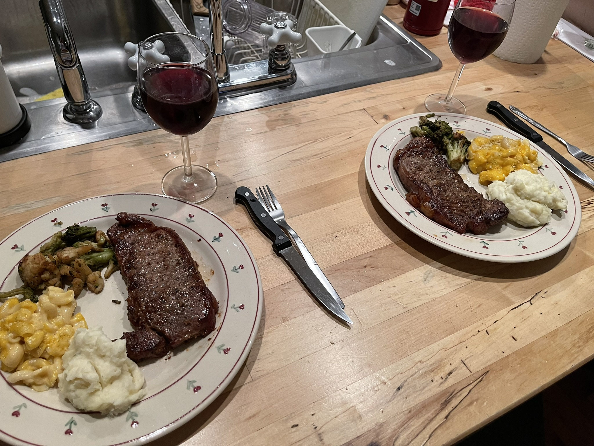
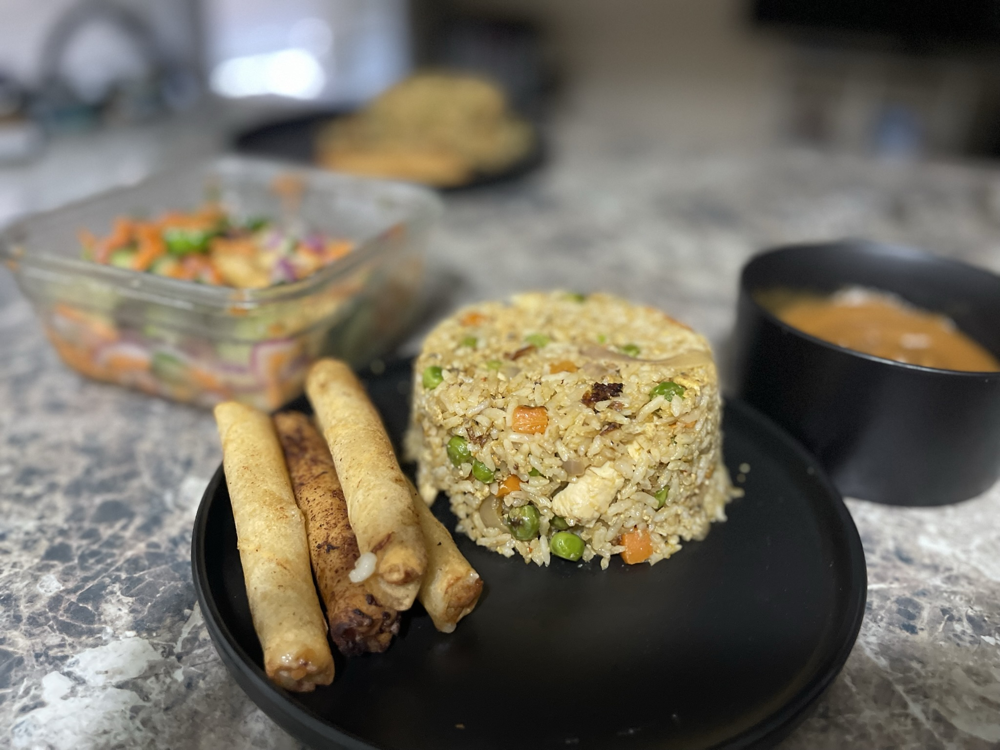
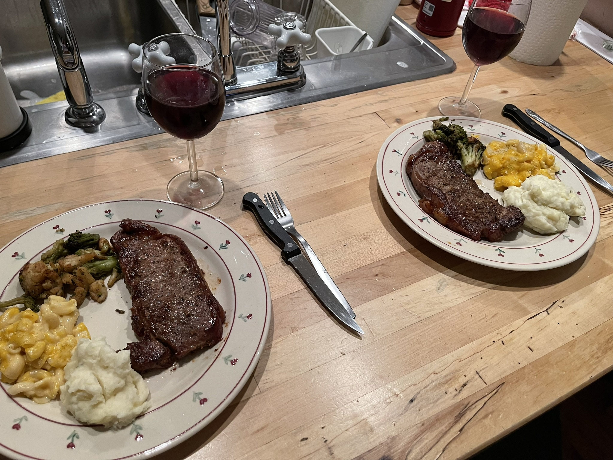
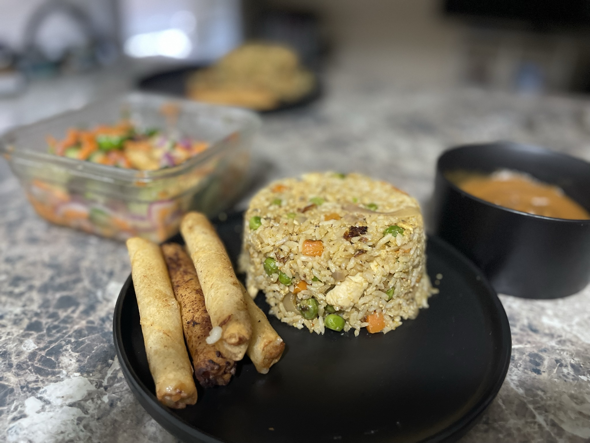

Cultural Cravings with Jozelyn
Pozole Verde (Green Pozole)
Let's dive in.
Pozole is a traditional Mexican soup or stew that has deep cultural roots, often enjoyed during celebrations and special occasions, such as New Year's, Independence Day, and other festivities. The dish is known for its hearty and comforting qualities, combining a rich, flavorful broth with hominy (dried maize that has been treated with lime), meat, and a variety of toppings.
Puerto Rican Rice and Beans (Habichuelas Guisadas) Puerto Rican Tostones (Fried Plantains) Bistec Encebollado (Puerto Rican Steak and Onions)
Beyond the Basics: How to Create Puerto Rican Dishes That Wow Your Tastebuds.
Habichuelas Guisadas is a staple dish in Puerto Rican cuisine, typically served as a side dish alongside rice and meat. It consists of red beans (habichuelas rojas) cooked in a rich, flavorful sauce made with spices, tomato, and a blend of seasonings, giving it a comforting, hearty taste. The beans are stewed until tender and absorb all the delicious seasonings.
Tostones are a popular Puerto Rican snack or side dish made from green plantains (unripe plantains). They are crispy on the outside and soft on the inside, offering a delicious contrast of textures. These fried plantains are typically served with a dipping sauce or as a side to meats and rice.
Bistec Encebollado is a classic Puerto Rican dish consisting of marinated steak served with a savory and flavorful onion sauce. The dish is comforting and full of robust flavors, with the sweetness of the caramelized onions complementing the savory steak.
The Heart and Soul of Every Dish
Hi, I’m Jozelyn, a passionate home cook with roots as diverse as my recipes—Mexican, Puerto Rican, German, and Lothian. My kitchen is where flavors from my heritage come together to create delicious meals that celebrate culture, tradition, and love.
Whether it’s a comforting Puerto Rican mofongo, authentic Mexican pozole, or something with a creative twist, you’ll find dishes that tell a story. Cooking is my way of staying connected to my roots while exploring new ways to share them with the world.
I also love sharing my food with the ones I love. Cooking is my passion and my way of showing appreciation and love to those I care about.
Join me as I whisk together culture, creativity, and heart into every bite. Let’s cook, learn, and celebrate flavors together!
Let me know if this captures your vision!
Top Recipes & Stories You’ll Love!
 



Watch Me Whisk, Stir, and Spice Things Up!
Taste the Culture, Follow the Journey
Stay with me as I continue to explore, create, and share new flavors from my kitchen to yours. By following, you’ll get a front-row seat to my latest recipes, cooking tips, and exciting food adventures. Whether it's a traditional dish or a new twist on an old favorite, you won’t want to miss what’s coming next. Let’s keep the journey going—together!